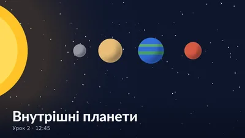
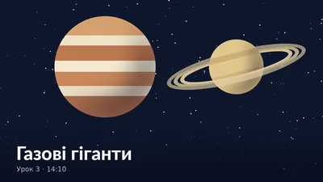
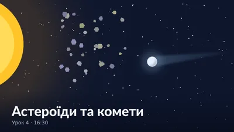
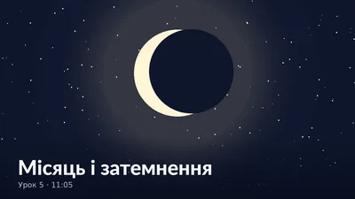

Внутрішні планети
Меркурій, Венера, Земля і Марс: чим вони схожі та чим відрізняються.
ПройденоУрок 3 з 5 · Демо-фрагмент
Знайомимося з Юпітером і Сатурном: чому їх називають газовими гігантами, з чого вони складаються та як рухаються навколо Сонця. У фрагменті порівнюємо розміри планет і тривалість їхнього року.
| Модуль | Урок | Тривалість | Статус |
|---|---|---|---|
| Планети | 1. Сонячна система | 08:20 | Пройдено |
| 2. Внутрішні планети | 12:45 | Пройдено | |
| 3. Газові гіганти | 14:10 | Зараз | |
| Малі тіла та Місяць | 4. Астероїди та комети | 16:30 | Скоро |
| 5. Місяць і затемнення | 11:05 | Скоро | |
| Загальний прогрес | 2 з 5 · 40% | ||

Меркурій, Венера, Земля і Марс: чим вони схожі та чим відрізняються.
Пройдено
Юпітер і Сатурн: з чого складаються та чому такі великі.
Зараз
Чим астероїди відрізняються від комет і чому в комет з’являється хвіст.
Скоро
Фази Місяця, сонячні та місячні затемнення.
Скоро